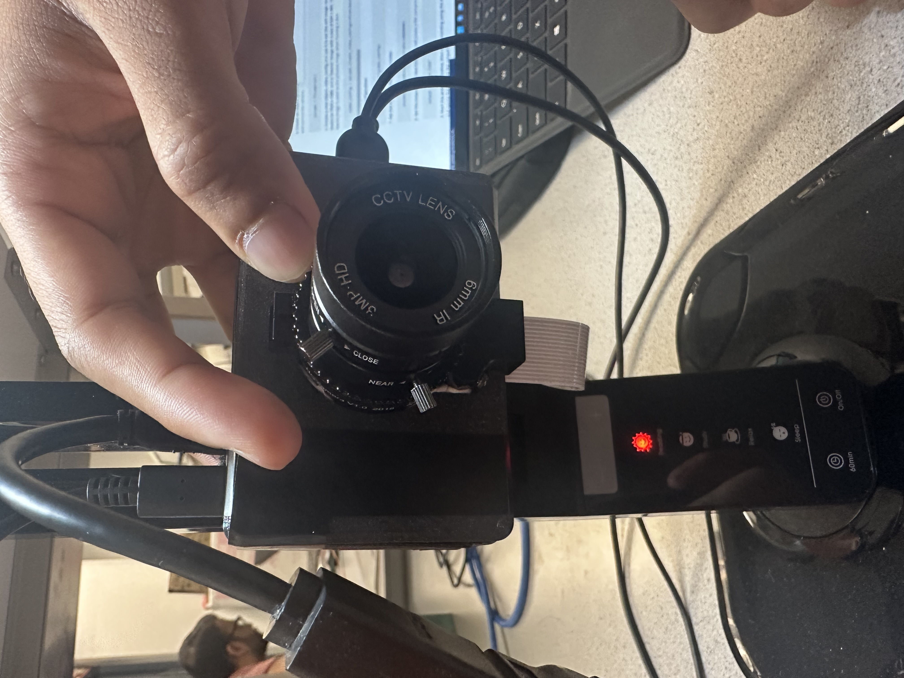

ASL Learning Game
ECE 5725 Final Project
By Bianca Tseng, Jacob Lashin, and Kishore Kannan
Demonstration Video
Overview
For our final project, we developed a real-time embedded system that can detect and classify basic American Sign Language (ASL), specifically the letters of the alphabet, excluding J and Z, and numbers 0 through 9. Through the video feed provided by the Raspberry Pi HQ camera, the program detects and captures images of a person’s hand using computer vision and classifies the resulting image through our custom machine learning models. Two custom models were trained and tuned to classify letters and numbers based on an open-source ASL image database. We created a user interface (UI) in order to gamify our system to be used as an educational tool to teach ASL.
Project Objectives
- Use computer vision to reliably track and capture images of hands from a video feed
- Train and tune models to classify images to their corresponding sign
- Implement a UI for our program so that it can be used as an educational game
Design and Implementation
Hardware
Since our project is heavily software focused, our hardware consisted of three major components: Raspberry Pi 4B, Raspberry Pi High Quality (HQ) Camera and lens, and a monitor. The HQ Camera is connected to the Raspberry Pi through the specialized camera ribbon cable port embedded in the Pi’s board. This specialized port is specifically designed as an easy interface with any raspberry pi camera on the market. The HQ Camera also requires a lens in order to properly function. Our team personally owned a compatible Arducam 6mm lens which gave our camera a clear and wide field of view without distorting the image. Utilizing the camera as a video feed input, the Pi processes the information and creates an overlay over the video feed which is then displayed on the monitor. Additionally, to make our project more aesthetic, we 3D printed a Raspberry Pi and HQ camera case, which we found from open-source CAD models online, and mounted the case onto a light so that the video feed always had sufficient lighting.
Off-device Machine Learning Program
A large part of our project's software is classification through machine learning. We did all of the dataset preparation as well as the machine learning model creation and training off the device, on a laptop using Jupyter Notebook. The final dataset we used came in raw 200x200 images, so we had to process this dataset to extract feature vectors from each image to be used by the model. To generate a useable dataset to feed into the models, we wrote a program that would loop through all the raw images in the dataset, load them into 2D pixel arrays, perform hand detection using the MediaPipe solutions library, and generate a feature vector from the positions of the 21 hand landmarks, which represent the joints, to save into a .csv file along with the correct label. Other libraries used for dataset generation were pandas for loading and saving .csv files, NumPy for general array manipulation, pillow for loading images from a path, and os for accessing all images in a directory.
After generating the .csv files which contained the label and feature vector for all useable images from our dataset, we used the TensorFlow library to create a machine learning model and train it. We went with 3 convolutional layers with max pooling, batch normalization, and dropout layers, and also dense layers at the end, ending up with the total weights for each label, then the label with the highest weight was picked for the classification. The batch normalization and dropout layers prevent overfitting, which was a big problem at the beginning. It took a lot of trial and error to tune the parameters, but the strategy for the convolutional layers was to start off with fewer filters that were larger, then have more filters that were smaller deeper into the network. Then the max pooling layers are used to not only reduce the output sizes of the convolutional layers but also to retain the features with the max weight. Overall, we settled for a very specific model, but imagine that other model compositions could work just as well, and if time permitted, would have played around with different layers and parameters to further improve the classification accuracy. After training the model using the dataset we generated, we converted the model from TensorFlow to TensorFlow lite, as that was what the RPi would be running due to its lightweight nature.
Main RPi Program
We used an incremental approach when coding the main RPi program. First, we worked on getting the camera to display the feed and capture images. We used the PiCamera2 library to interface with our Raspberry Pi camera, which involved reading a lot of documentation and testing things out because PiCamera2 was a fairly new library, replacing PiCamera. Then, after we had a working program that could open the camera preview and take continuous images without disrupting the preview, we moved on to adding in hand detection using MediaPipe. The code here was fairly straightforward as it was the same as what was used off-device to generate feature vectors from the raw images of the dataset. The program continuously took still images from the camera, converted them into a 2D pixel array, and fed them into the MediaPipe hands solution. This is also when we experimented with adding overlays and other graphical elements to the camera preview in order to have a bounding box following the detected hand. In order to do so, we had to modify the camera buffer directly using a callback function to draw the graphical elements onto each frame of the camera image. Finally, we imported the TensorFlow lite models we created and trained off-device, converted the hand landmarks to a feature vector the same way as how we generated the training set, and fed it through the model to produce a classification result, displaying it on the screen. We decided to have two separate models for letters and numbers since there were a lot of similar and overlapping gestures between the two, such as with 0 and O, 1 and D, and 6 and W. Therefore, we implemented the ability to switch between two modes, classifying numbers vs letters.
After we made sure that our program was successfully able to identify a hand and reliably classify ASL hand gestures, we worked on gamifying the program. We created a cool loading screen to load the camera and other setups and displayed the hand bounding box as well as the currently classified sign detected by the model. We kept track of variables such as the current score, the current mode (numbers vs letters), a prompt which is what sign the player is trying to create, a timestamp for when the prompt was given, and a timestamp for when the correct answer was identified. In order to check if a player was signing the correct sign given by the prompt, we perform continuous sequential classifications and check if the correct label has been detected eight times in a row. This means that the player needs to hold the correct sign for around one second for it to register and gain a point. Then, the time taken is displayed with a message, and the prompt is regenerated and timer reset. There is a timer with how much time has passed for the current prompt, and the score is reset to 0 after a player has not successfully signed the correct sign in 30 seconds, which generates a new prompt. We implemented a menu on the bottom quarter of the screen, where if the detected hand is found in the menu zone, a white circle at the tip of the index finger is drawn instead of the bounding box. Then, we used two boxes on the left and right of the screen for the menu items. The player can hold the index finger in the box for 3 seconds for the selection to be confirmed. We used this to quit out of the program and switch the mode between numbers and letters. We made sure to make the user interface and information displayed as intuitive as possible, having the bounding box change from red to green when a correct sign is displayed, and a UI bar at the top that displays success and skip messages.
Figures
Program prompting user to sign the number seven
User signs seven as prompted and time is displayed
User signs L as prompted and time is displayed
User makes the incorrect sign correspondiing to the prompt
Program skips becuase user does not make the correct sign within 30 seconds
Demonstration of functionality of menu bar

Our hardware setup
Debugging and Testing
When we started the project, we were using the Buster 32-bit version of the Raspbian OS that we had been using for the ECE 5725 lab classes. Soon, we realized that this was causing issues with certain libraries that we wanted to use, like MediaPipe and TensorFlow. We made the decision to switch to Bullseye (the more recent version) which would eliminate those issues. We also made the choice not to use the piTFT display in our project which let us use the 64-bit flavor of Bullseye without any issues. This was particularly helpful since our project involved computer vision and machine learning libraries.
One challenge we encountered was choosing an ASL image dataset to train our models on. We originally found a dataset of ASL letters that had over 30,000 images, however, the resolution was incredibly low, only 28-by-28 pixels per image. Thus, when we dropped the resolution of the sampled image from the feed, one could barely distinguish what was occurring in the frame. The advantage of this dataset was definitely the size, and it was already preprocessed into label and feature vectors in .csv files; however, when we previewed the images, we quickly realized the resolution would be a big problem. So we switched to a higher resolution dataset with 200x200 pixel images, although with only 70 images per label, totaling under 2000 images. The dataset came with just raw images sorted into their labels, meaning we would have to process the images into feature vectors in a .csv file in order to feed them into the machine learning model. Despite the small size, we stuck with this dataset for the rest of the project and the final accuracy of the model was satisfactory and quite impressive given the size of the training set.
Our initial approach to classifying the hand signs was to sample full raw images from the video feed and feed them through an image classification model, with the feature vectors being a 2D array of the raw image pixels. However, after trying out many different models and parameters, we found that even though the model had a good validation accuracy of around 92% at the end of the training, the accuracy was extremely low when we tried classifying live using the RPi and raw Pi Camera images. We even tried augmenting the dataset to include a new category for no gesture or hand detected and added more noise and lighting to the dataset, but the results were still very bad. The images in the final dataset were cropped to have the hand be as large as possible and edited so the background was completely black; however, the images our Pi Camera took usually had the hand only take up a small part of the image and had a very noisy background. We realized that this method was too dependent on factors such as lighting, hand distance to the camera, and background, so we decided to preprocess the image using MediaPipe hand detection to first extract information about the position of the hand and joints, then feed that information into a newly trained machine learning model to then identify the gesture, which is a very commonly used strategy in a lot of machine learning gesture detection models.
Another challenge was getting graphics elements onto the PiCamera2 camera preview feed. The display that shows the camera feed and other graphics was created using a combination of PiCamera2’s preview feature, and the computer vision library OpenCV’s tools to manipulate image arrays to create graphics. It is fairly simple to add overlays through OpenCV’s camera capture tool, but it was more challenging to add simple overlays through PiCamera’s preview feature. The Raspberry Pi Camera was not compatible with using OpenCV's video capture ability, so we first experimented with using PiCamera2 to capture continuous images and feed them to cv2 to display, but the speed of PiCamera2’s capturing made the framerate unacceptable, so instead we used a callback function that modified the camera buffer from PiCamera2 directly, using OpenCV’s functions to modify arrays to draw lines, rectangles, circles, and add text on top of the image. Through this, we were able to draw on UI elements such as the menu bars, the hand bounding box, and even a loading screen.
Over time, we did encounter a few more issues with the libraries themselves such as having to install the headless cv2 library over the normal one. Oftentimes, uninstalling and reinstalling the libraries also fixed some random dependency errors. For example, we encountered an error with ‘protobuf’ randomly even though the code was running perfectly fine earlier that day. An uninstall and a ‘pip3 install -U protobuf’ fixed that error. Towards the end of refining the code and working on it, we stopped encountering these errors which allowed us to just focus on getting the UI correct and testing other parts of the project.
Results and Future Developement
In the end, we accomplished what we originally sought to complete: implement a program that can reliably detect and classify simple American Sign Language and gamify it into a learning game. Our machine learning models that we constructed and trained provided us with a high classification accuracy with only signs for letters S and T being hard to differentiate because of their similarities to other signs like E, M, and N.
Additionally, the game that we developed by creating an overlay for the video feed gave users a simple way of learning ASL. The game was successfully designed to tell the user what sign to make and how quickly the user made the sign-in, The user can increment their score by correctly making the sign, or if a thirty second time frame passes before the correct sign is made, then the score will reset to zero and the sign directive will produce a new random sign. The user interface was designed to be simple and clear so that the user can easily determine what sign the program directs the user to make and also know what sign the user is currently making. We also implemented features so that the user can easily switch between the letters or numbers model and quit out of the program entirely.
Like all machine learning models, there is always room for improvement. The current model’s classification is not flexible enough to accommodate different angles of the hand, and it still has some trouble differentiating between similar letters like E, M, N, S, and T. This is primarily due to the quality of the dataset used. Our dataset is extremely small, with only 70 images per label. The dataset images are also not very diverse with lighting conditions, hand sizes and colors, rotations, background, and noise/blurriness. The model also currently tries to classify every possible hand sign into one of the letters/numbers, which is not good for an educational game where we want to make sure the sign is precisely correct. So we could also extend the dataset to include signs that do not fall into any of the provided categories to identify correctly when a sign is incorrect.
Another improvement we could make is to extend the project from just classifying still images to being able to recognize moving gestures. In its current state, our model excludes the classification of J and Z because they require movement to correctly sign them. Furthermore, we can also further classify more complex signs like greetings and commonly used phrases, rather than just the alphabet and single-digit numbers.
Our game aspect is a rather simple one, and we had ideas on how to develop it even further but were unfortunately unable to do so because of time constraints. We thought of implementing a head-to-head game where two users can face off and see who can make the sign the fastest. This can be done rather easily by simply setting the MediaPipe software to detect two hands in the video feed and feed both hands through our ML models. We also thought of ideas like spelling words out by completing a sequence of signs.
Work Distribution
All group members worked together in the lab to complete this project. Bianca Tseng dedicated additional time to train the ML models. Jacob Lashin provided and set up the 3D-printed case, light source, HQ Camera, and lens. Kishore Kannan was in charge of SD card backups and the installation of the new OS that we used for this project.

Bianca Tseng
bat66@cornell.edu
Jacob Lashin
jwl266@cornell.edu

Kishore Kannan
kk848@cornell.edu
Parts List
- Raspberry Pi 4B (Provided)
- Raspberry Pi HQ Camera ($50)
- Arducam 6mm Lens for HQ Camera ($22.99)
- 3D Printed Case for Pi and Camera (NA)
- Monitor (Provided)
- Total: $72.99
References
- Picamera2 Library
- 3D Printing Model for Pi Camera Case
- MediaPipe Hands Guide
- MediaPipe Hands Landmarks
- First Training Image Dataset (28x28 resolution)
- Final Training Image Dataset